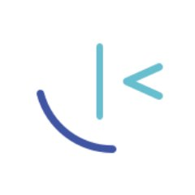
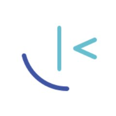

Catalina Hasnas
Frontend Developer
Timisoara, Romania

Technologies and languages
- Languages and frameworks:
- Javascript, Typescript, React, Next.js, GraphQL, CSS, HTML
- Technologies and tools:
- Git, CircleCI, MongoDB, unit and integration testing
- Other:
- Accessibility, SEO, Core Web Vitals
- Spoken languages:
- Romanian - Native, English - Fluent
Work experience
OPSWAT, Romania
Backend Developer
Cybersecurity company that develops products that focus on threat prevention and process creation for secure data transfer and safe device access
MetaDefender Cloud
A comprehensive API that provides threat intelligence technologies to secure organizations against file-borne malware
community version API docs- Configured jest for unit testing; Set test coverage goals and added unit tests for the core features of the product;
- Participated in the migration of the API gateway from v4 to v5 and added TypeScript;
- Upgraded eslint version; Started the integration of prettier for the codebase using "Improve as you go" strategy;
- Implemented throttling API requests based on licence type;
- Implemented pagination for an API endpoint with Redis caching to optimize data retrieval;
- Delivered a series of presentations on React Hooks and best practices;
OSINT for Ukraine
Open Source Project Maintainer
Non-profit specialising in open-source investigations and international law
Project Mariupol
Opensource TimeMap tool for sourcing and mapping of potential international crimes committed in Ukraine
About Project Mariupol opensource repository live url- Maintain an opensource Project Mariupol 2.0 repository to refactor and improve the original timemap;
- Implemented the frontend of a military data feature; Displaying military units on the map;
- Implemented artillery range display feature;
AMDARIS
Frontend Developer
Outsourcing company where I've had the opportunity to work on three client projects, adapting to diverse technologies and ways of working.
Robert Walters
Customer relationship management solution for a recruitment company
Enabling recruiters to place Candidates to Jobs belonging to an Organisation that is represented by a Client, manage payments and emails.
- Designed, prototyped and implemented features within an Agile Scrum team;
- Implemented the frontend of an email system that’s using Outlook API, adding the possibility to link an email to an entity in the app;
- Implemented the frontend of a custom billing system;
- Created dynamic forms with complex validation;
- Enabled typescript-eslint rules such as no-explicit-any, strictNullChecks, and lead technical debts to refactor the project accordingly;
- Migrated some endpoints from GraphQL API (using Apollo Client) to REST API;
- Decreased the run time of unit tests by 30% by refactoring the custom render function;
- Upgraded and updated NPM packages, ensuring up-to-date and secure dependencies.
- Collaborated with backend and infrastructure teams for ensuring seamless deployments with circleCI across multiple environments;
- Used Figma and MUI to style the App;
Pearson
E-learning tool where teachers can share different types of content and track the progress of students, leave feedback.
- Created and updated internal React Libraries used in multiple Pearson projects;
- Worked with a large codebase that's using Redux-Saga;
- Utilized React-intl for multilingual support in the application;
- Used TailwindCSS and Sass to style the App;
Mentorship
Frontend Mentor
An initiative dedicated to attracting, supporting and promoting women in IT
- Mentor two mentees in frontend web development;
- Set up a personalised roadmap that focuses on the fundamentals and modern practices;
- Set up weekly training sessions and code reviews;
- React code reviews
- CSS code reviews
- Other examples of code reviews
Education
Babes Bolyai University
Bachelor's degree
Administrative Sciences
My favorite subject was statistics, because it demonstrated the potential of software like IBM SPSS for data analysis, sparking my interest in programming. Using IBM SPSS Software for statistics improved my analytical thinking. It introduced me to variables of different types, showing how they could be grouped, transformed, and operated upon.